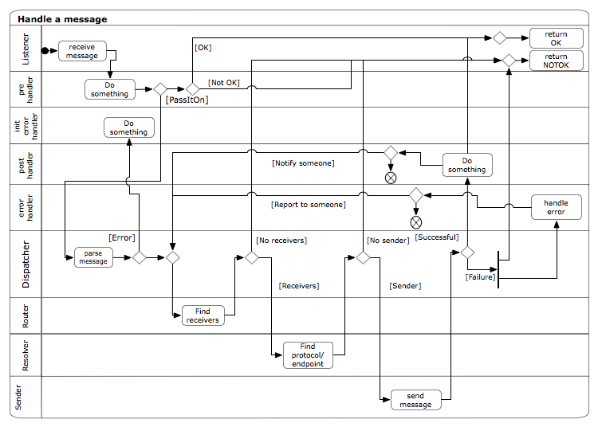

The components in a node described in an simple activity diagram:
The absolutely simplest node contains one listener, one simple router, a static resolver, one sender and no handlers.
In that case a message:
comes in trough the listener,
after it is parsed into a python object it is passed on to the dispatcher, who
sends it to a router which returns zero or more address.
protocol/endpoint combination.
message together with the endpoint specification
the sender sends the message
reply is returned to the listener
who returns a response to the original sender according to the protocol it uses.
This then can be arbitrarily complicated;
A node is started with the command:
nodectl.py start <nodeconfiguration_file>
The node configuration file is a python script that using the nodeconfig ontology specifies what parts the node is expected to contain.
The command syntax for nodectl.py is:
Usage: nodectl [options] operation 1*node
| -l logfile | : The directory where the logfile should be placed |
| -p pidfile | : The directory where the pidfile should be placed |
There is no central place where you can turn on/turn off debug logging, rather you do it per piece. If you want to know what a specific listener does, turn on the debugging for that listener. The same for every other piece.
Debug level is an integer, but presently it’s mostly on/off. This might change in the future.